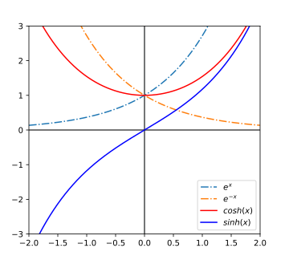

工程数学
Engineering Mathematics
李小飞 光电科学与技术学院
2023-03-01
第三章 薛定谔方程
Table of Contents, with links to other slides of this same presentation.
1. 薛定谔方程简介：
- 椭圆型($\Delta<0$): 波动方程
- 双曲型($\Delta>0$): 拉普拉斯（泊松）方程
- 抛物型 ($\Delta=0$): 热传导方程
第一讲 波动方程
1. 方程的建立
例-1: 考虑均匀柔软的细弦线，二端固定，受到扰动后在平衡位置作微小运动。求位移函数 $u(x，t)$所满足的方程。

代入$T_0$, 有：$$T_0 (\tan \alpha_2 - \tan \alpha_1 )=\rho ds u_{tt}$$
斜率就是一阶导数，同时小角度条件下$ds \simeq dx$
$$T_0[u_x(x+dx,t)-u_x(x,t)]=\rho dx ~u_{tt}$$
整理 $$\frac{T_0}{\rho}\times\frac{u_x(x+dx,t)-u_x(x,t)}{dx}=u_{tt}$$
基于导数定义，得波动方程： $$ u_{tt}=a^2u_{xx} $$
定解条件:
若质点受外力作用(比如风)，则有： $$ u_{tt} =a^2 u_{xx} +f(x,t) $$
TIPS:
2. 方程的求解
例-2: 求解如下一维波动方程 \begin{cases} u_{tt} = a^2 u_{xx} \qquad (0 < x < l) \\ u(x,t)|_{t=0}=\psi (x) ,\qquad u_t (x,t)|_{t=0}=\Psi (x) \\ u(x,t)|_{x=0}=0, \qquad u(x,t)|_{x=l}=0 \end{cases} 解: (傅里叶) 设 $u(x,t)=T(t)X(x) $，代回方程, 得： $$ T^{\prime\prime} (t) X(x) = a ^2 T(t) X ^{\prime\prime}(x) $$
上式恒成立，可令 $$ \dfrac{ T^{\prime\prime}}{ a^2 T} = \dfrac{X^{\prime\prime} }{X} = -\lambda $$
得两个常微分方程
\begin{cases} X ^{\prime\prime} +\lambda X=0, \quad 0 < x < l \\ X(0)=0, \quad X(l)=0 \end{cases}
$$ T^{\prime\prime} +\lambda {a^2 T}=0 $$
TIPS:
经分离变量，偏微分方程转化为两个常微分方程！
特征（辅助）方程 $$ \mu^2 +\lambda =0 $$
根为: \begin{cases} \mu~_1 =+\sqrt{-\lambda}\\ \mu~_2 =-\sqrt{-\lambda} \end{cases}
(1) 相异实根（$\lambda < 0$）
写出通解：$$ X(x)=A e^{\sqrt{-\lambda}x} + B e^{-\sqrt{-\lambda}x} $$
代入定解条件$X(0)=0, \quad X(l)=0$, 得定解方程组： \begin{cases} A + B = 0 \\ A e^{\sqrt{-\lambda}l} + B e^{-\sqrt{-\lambda} l} =0 \end{cases}
有解条件为系数行列式为零： $$ \begin{vmatrix} 1 & 1 \\ e^{\sqrt{-\lambda} l} & e ^{-\sqrt{-\lambda} l} \end{vmatrix} = 0 $$
很明显，这个行列式不等于0， 所以无非零解
写出通解： $$ X(x) = Ax + B $$
分别取$x=0, x=l$, 得定解方程组： $$\left\{ \begin{array}{lll} B=0\\ Al+B=0 \end{array} \right. $$
也无非零解
写出通解：$$ X(x)=A\cos \sqrt{\lambda}x+ B\sin \sqrt{\lambda}x $$
分别取$x=0, x=l$, 得定解方程组： $$ \left[ \begin{array}{lll} 1&0\\ \cos( {\sqrt{\lambda}~l}) &\sin ({\sqrt{\lambda}~l}) \end{array} \right] \left[ \begin{array}{ll} A\\ B \end{array} \right]= \left[ \begin{array}{ll} 0\\ 0 \end{array} \right] $$
有 $$ \sqrt{\lambda} l = n \pi \quad (n = 1, 2, 3, \cdots ) $$
解得
把固有值代入通解， 得：
代入固有值 $\lambda_n = \dfrac{n^2 \pi~^2 }{l~^2 }$ $$ T_n ^{\prime\prime} +\lambda~_n a~^2 ~T=0 $$
改写为： $$ T_n ^{\prime\prime} + (\omega_n a)^2 T=0 $$
根据特征方程只有虚根，写出通解 ： $$ T _n = C _n \cos \omega_n a t+ D _n \sin \omega _n a t $$
叠加解 (解函数)： $$ \begin{array}{llll} u(x,t) &=&\sum\limits_{n=1}^{\infty } u_n(x,t)\\ &=& \sum\limits_{n=1}^{\infty } (a_n\cos\dfrac{ n\pi a}{l}t+ b_n\sin \frac{ n\pi a}{l}t) \sin \dfrac{ n\pi }{l}x \end{array} $$
需确定系数 $a_n, b_n$！
代入定解条件-1: (初始位置) $u(x,0)= \varphi (x)$
$$\varphi (x)=\sum_{n=1}^{\infty } a_n \sin \dfrac{ n\pi }{l}x $$
由傳里叶变换公式得系数： （注意：积分区间导致因子变化） $$ a_n = \frac{2}{l}\int\limits_{0 }^{l} \varphi (x) \sin \dfrac{ n\pi }{l}x dx $$
$$\Psi (x)=\sum_{n=1}^{\infty } b_n \frac{ n\pi a}{l} \sin \frac{ n\pi }{l}x $$
由傳里叶变换公式，得： \begin{aligned} b_n \frac{ n\pi a}{l} & = \frac{2}{l}\int\limits_{0 }^{l} \Psi (x) \sin \dfrac{ n\pi }{l}x dx \\ b_n &= \frac{2} { n\pi a} \int\limits_{0 }^{l} \Psi (x) \sin \dfrac{ n\pi }{l}x dx \end{aligned}
结束！
叠加解的思考与讨论：
3. 固有函数正交
例-6: 试证明所有固有函数($X~_n= \sin \dfrac{n\pi~}{l} x$) 两两正交
证明: 固有函数是固有方程的解 \begin{array}{llll} &X_n ^{\prime \prime}+\lambda_n X_n=0 \qquad (1) \\ &X_m ^{\prime \prime}+\lambda_m X_m=0 \qquad (2) \end{array}
$X_m$乘(1)式，$X_n$乘(2)式, 得： \begin{array}{llll} &X_m X_n ^{\prime \prime}+\lambda_n X_m X_n=0 \qquad (3)\\ &X_nX_m ^{\prime \prime}+\lambda_m X_n X_m=0 \qquad (4) \end{array}
两边同时积分： \begin{array}{llll} (\lambda_n - \lambda_m )& \int\limits_{0 } ^{l} X_n X_m dx = \int\limits_{0} ^{l} [ X_n X_m ^{\prime\prime} - X_m X_n ^{\prime\prime} ] dx \\ & = [ X_n X_m ^{'} - X_m X_n ^{'} ] _0 ^{l} - \int\limits_{0} ^{l} [ X_n ^{'} X_m ^{'} - X_m ^{'} X_n ^{'} ] dx \end{array}
由于 $\lambda_n \ne \lambda_m$, 得： $$ \int\limits_{0 }^{l} X_n X_m dx=0 , \qquad (n\ne m) $$
即： 固有函数两两正交
结束！
证明: 当 $ n = m \ne 0$时， \begin{array}{llll} \int\limits_{0 }^{l} X_n X_m dx&= \int\limits_{0 }^{l} X_n X_n dx \\ &= \int\limits_{0 }^{l} \sin ^2 \dfrac{n\pi~}{l} x dx \\ &= \dfrac{l}{2} \\ &= \dfrac{T}{2} \end{array}
结束！
通常写成正交归一性 \begin{aligned} \dfrac{2}{l} \int\limits_{0 }^{l} X_n X_m dx & = \begin{cases} 0, \qquad (n=m) \\ \\ 1, \qquad (n \not =m) \end{cases}\\ &= \delta _{nm} \end{aligned}
初始位置决定 $a_n$
\begin{aligned} a_n&= \dfrac{2}{l} \int\limits_{0 }^{l} \varphi (x) \sin \dfrac{ n\pi x}{l} dx = 2 \int\limits_{0 }^{1} \sin(\pi x) \sin n\pi x dx \\ & = 2 \int\limits_{0 }^{1} \sin(\pi x) \sin \pi x dx = 1 \quad (n=1) \end{aligned}
初始速度决定 $b_n$
\begin{array}{lllllllll} b_n&= \dfrac{2} { n\pi a} \int\limits_{0 }^{l} \Psi (x) \sin \dfrac{ n\pi x}{l} dx \\ &= \dfrac{2} { n\pi} \int\limits_{0 }^{1} 0 \sin n\pi x dx \\ &=0 \end{array}
代回，得定常解函数： $$ u(x,t) = \cos(\pi t) \sin(\pi x) $$
结束！
作 业： 求波动方程的定常问题
\begin{aligned} 1. & \begin{cases} u_{tt} =a^2u_{xx},\quad 0 < x < l, t> 0 \\ u(0,t) =u(l,t)=0 \\ u(x,0) =sin \dfrac{\pi x}{l} , u_t (x,0)=\sin \pi x \end{cases}\\ 2. &\begin{cases} u_{tt} =a^2u_{xx} ,\quad 0 < x < 1, t> 0 \\ u(0,t) =u(1,t)=0 \\ u(x,0) =3sin \dfrac{3\pi x}{2} +6\sin(\dfrac{5\pi x}{2}), u_t (x,0)=0 \end{cases} \\ 3. &\begin{cases} u_{tt} =u_{xx} ,\quad -1 < x < 1, t> 0\\ u(-1,t) =u(1,t)=0 \\ u(x,0) =\sin 4\pi x , u_t (x,0) = x (1-x) \end{cases} \end{aligned}第二讲 热传导方程
1. 方程的建立
例-1: 实验发现，热量总是从温度高的地方传向温度低的地方，服从傅里叶热传导定律： \begin{equation*} q=-k\nabla u \end{equation*}
式中，$q$是热流强度 （定义为单位时间通过单位横截面积的热量）； $k$ 是材料的导热系数 ；$\nabla $ 是梯度算子~$(\frac{\partial }{\partial x} +\frac{\partial }{\partial y} +\frac{\partial }{\partial z})$,u是温度函数。
试建立温度函数$u(x,y,z,t)$所满足的方程
$$\begin{aligned} (q_x|_{x+dx} &-q_x|_x)dydz \\ &=-\dfrac{\partial q_x }{\partial x} dxdydz\\ &= \dfrac{\partial }{\partial x} (k\dfrac{\partial u}{\partial x})dxdydz \end{aligned}$$
总的热量净流入： $$[\frac{\partial }{\partial x} (k_x\frac{\partial u}{\partial x}) + \frac{\partial }{\partial y} (k_y\frac{\partial u}{\partial y}) + \frac{\partial }{\partial z} (k_z\frac{\partial u}{\partial z}) ]dxdydz $$
对于各向同性介质： \begin{equation*} c \rho \frac{\partial u }{\partial t}=k[\frac{\partial }{\partial x} (\frac{\partial u}{\partial x}) + \frac{\partial }{\partial y} (\frac{\partial u}{\partial y}) + \frac{\partial }{\partial z} (\frac{\partial u}{\partial z}) ] \end{equation*}
\begin{equation*} \frac{\partial u }{\partial t}=\frac{k}{c\rho}[\frac{\partial }{\partial x} (\frac{\partial u}{\partial x}) + \frac{\partial }{\partial y} (\frac{\partial u}{\partial y}) + \frac{\partial }{\partial z} (\frac{\partial u}{\partial z}) ] \end{equation*}
\begin{equation*} u_t=a^2 [u_{xx} +u_{yy} +u_{zz}] \end{equation*}
\begin{equation*} u_t=a^2 \nabla ^2 u \end{equation*}
对于一维导线：$\displaystyle u_t= a^2 u_{xx}$
如果有热源$F(x,y,z,t)$,令 $f=\dfrac{F}{c\rho}$： $$ u_t= a^2 u_{xx}+f$$
如果时间足够长，温度应不再随时间变化 ($u_t =0$)，
2. 方程的求解
例-2: 对于有限长导线，求解一维热传导方程 \begin{cases} u_{t}=a^2u_{xx} ,~~~~ (0 < x < l, t> 0)\\ u(x,t)|_{t=0}= \psi (x) \\ u(x,t)|_{x=0} = 0, ~~~ u(x,t)|_{x=l} = 0 \end{cases}
解: (傅里叶) 方程可分离变量, $u(x,t)=T(t)X(x) $，代回方程, 得：
\begin{equation*} T~^{'}(t)X(x) =a~^2 T(t)X~^{''}(x) \end{equation*}
\begin{equation*} \frac{T~^{'}}{a~^2 T}=\frac{X~^{''} }{X} =-\lambda \end{equation*}
方程（I）： \begin{cases} X^{\prime \prime} +\lambda X=0 ~~,~~ 0 < x < l \\ X(0)=0 ~,~X(l)=0 \end{cases}
方程（II）： \begin{cases} T^{'} +\lambda {a^2 T} = 0 \\ \cdots \end{cases}
是原固有值问题
代入$\lambda_n$, 得： $$ T~^{'} +\lambda~_n a~^2 ~T=0 $$
变形：$$ T~^{'} + rT=0 $$
这是衰减数学模型 $$T_n=B_n \exp(-(\dfrac{n\pi a}{l})^2 t)$$
\begin{aligned} u(x,t) &= \sum\limits_{n=1}^{\infty }T_n(t)X_n(x)\\ &= \sum\limits_{n=1}^{\infty } B_n \exp(-(\dfrac{n\pi a}{l})^2 t) \sin \dfrac{n\pi~}{l} x \\ \end{aligned}
代入定解条件： $ \displaystyle u(x,0)= \psi(x)$
$$\psi (x)=\sum\limits_{n=1}^{\infty } B_n \sin \dfrac{ n\pi }{l} x$$
由傳里叶变换公式，得系数： $ B_n= \dfrac{2}{l}\int\limits_{0 }^{l} \psi (x) \sin \dfrac{ n\pi }{l} x dx , ~~~ (n=1,2,3,...) $
解: 写出零边界条件确定的固有值和固有函数:
展开系数： $$ \begin{array}{lllllllll} B_n&= \dfrac{2}{l}\int_{0 }^{l} \psi (x) \sin \dfrac{ n\pi }{l} x dx \\ &= \dfrac{2}{L}\int_{0 }^{L} x(L-x) \sin \dfrac{ n\pi }{L} x dx \\ &=\dfrac{2}{L} \times 2\times (\dfrac{L 2}{n\pi})^3 [1-\cos n \pi ] \end{array}$$
把$B_n$代回，得具体解函数：$$ u(x,t) = (\dfrac{8L^2}{\pi ^3}) \sum_{k=0}^{\infty} \dfrac{1}{(2k+1)^3} \exp(-(\dfrac{(2k+1)\pi a}{L})^2 t) \sin \dfrac{(2k+1)\pi~}{L} x $$
结束！
3. 三类边界条件
例-4: 求解第二类零边界条件热传导方程 \begin{cases} u_{t} =u_{xx} ~~,~~ 0 < x < l, t>0\\ u_x (0,t) =0, u_x (l,t)=0 \\ u(x,0) =\psi(x) \end{cases}
解: 类似的，经分离变量，偏微分方程可转化为
方程（I）： \begin{aligned} X^{\prime \prime} +\lambda X=0 ~~,~~ 0 < x < l \\ X'(0)=0 ,\qquad X' (l)=0 \end{aligned}
方程（II）： $T~^{'} +\lambda {a~^2 T}=0$
解方程I :
注意到方程（I）是导数边界条件，不是原固有值问题。因此不能直接写出固有值和固有函数
基于以前讨论，只有在$\lambda >0 $ 即特征方程有虚根时，方程才有非零解。
通解为： \begin{equation*} X=A\cos \sqrt{\lambda} x + B \sin \sqrt{\lambda} x \end{equation*}
为了使用导数边界条件，先对上式求导： \begin{equation*} X' (x)=\sqrt{\lambda} [-A\sin \sqrt{\lambda} x + B \cos \sqrt{\lambda} x] \end{equation*}
代入导数边界条件（分别取$x = 0, x = l$），得方程组
$$\left[ \begin{array}{lll} 0&1\\ -\sin( {\sqrt{\lambda}~l}) &\cos ({\sqrt{\lambda}~l}) \end{array} \right] \left[ \begin{array}{ll} A\\ B \end{array} \right] =\left[ \begin{array}{ll} 0\\ 0 \end{array} \right]$$
系数行列式为零时，有$ \sin\sqrt{\lambda}~l =0$，解得新的：
代回方程组，得待定系数：$ [A, B] ^T =[1, 0] ^T$, 解得新的：
固有函数： \begin{equation*} X_n=\cos \dfrac{n\pi}{l} x~,~~~ (n=0,1,2,\cdots ) \end{equation*}
解函数（叠加解）： \begin{equation*} u(x,t)=\sum\limits_{n=0}^{\infty } B_n \exp(-(\frac{n\pi a}{l})^2 t) \cos \frac{n\pi~}{l} x \end{equation*}
展开系数： \begin{cases} B_0&= \dfrac{1}{l} \int_{0}^{l} \psi(x) dx \\ B_n&= \dfrac{2}{l} \int_{0}^{l} \psi(x) \cos \dfrac{n\pi}{l} xdx ,~~ (n=1,2,\cdots ) \end{cases}
小结： 导数零边界条件下：
TIPS:
解: 导数边界条件，确定的固有值和固有函数为:
\begin{array}{lllllllll} B_0&=\dfrac{2}{l} \int_{0}^{l} \psi(x) dx \\ &= \dfrac{2}{\pi} \int_{0}^{\pi} x^2 (\pi-x)^2 dx \\ &=\dfrac{\pi ^4}{15} \end{array}
\begin{array}{lllllllll} B_n&=\dfrac{2}{l} \int_{0}^{l} \psi(x) \cos \dfrac{n\pi}{l} xdx \\ &= \dfrac{2}{\pi} \int_{0}^{\pi} x^2 (\pi-x)^2 \cos nx dx \\ &= \dfrac{2}{\pi} \times (-\dfrac{12 \pi}{n^4}) [\cos n\pi +1 ] \end{array}
代入，得解函数：$u(x,t) = \dfrac{\pi ^4}{30} - \sum_{n=1}^{\infty } \dfrac{3}{n^4} \exp(-(2ka)^2 t) \cos (2kx), \qquad (k=1,2,3,\cdots )$
可以直接计算$n_0$项
$u(x,t)= \sum\limits_{n=0}^{\infty } B_n \exp(-(\dfrac{n\pi a}{l})^2 t) \cos \dfrac{n\pi~}{l} x$
代入初值条件： $x^2 (\pi-x)^2= \sum\limits_{n=0}^{\infty } B_n \cos \dfrac{n\pi~}{l} x$
取出第0项： $x^2 (\pi-x)^2= B_0 \cos \dfrac{0\pi~}{l} x $
积分： $$\int\limits_{0} ^ \pi x^2 (\pi-x)^2 dx = \int\limits_{0} ^ \pi B_0 dx $$
$$\dfrac{1}{6} \int\limits_{0} ^ \pi (\pi-x)^4 dx = B_0 \pi $$
$$B_0 = \dfrac{1}{6\pi} \int\limits_{0} ^ \pi (\pi-x)^4 dx = \dfrac{\pi ^4}{30} $$
分部积分法计算不定积分
对、幂、三、指数函数的顺序进行
解: 求导
| $\psi (x) = x^2 (\pi-x)^2$ | $\nu^{(4)} (x) = \cos nx$ |
| \begin{aligned} \psi ^{\prime} (x) &= 2x(2x - \pi )(x - \pi ) \\ \psi ^{\prime \prime} (x) &= 2\pi ^2 -12\pi x+12x^2 \\ \psi ^{\prime \prime \prime} (x) &= 24x -12 \pi \\ \psi^{(4)} (x) &= 24 \end{aligned} | \begin{aligned} \nu ^{\prime \prime \prime} (x) &= 1/n \sin nx \\ \nu ^{\prime \prime} (x) &= -1/n^2 \cos nx \\ \nu ^{\prime} (x) &= -1/n^3 \sin nx \\ \nu (x) &= 1/n^4 \cos nx \end{aligned} |
\begin{array}{lllllllll} \int\limits_{0}^{\pi} \psi (x) \nu^{(4)} (x) dx &= [ \psi \nu^{\prime \prime \prime} - \psi' \nu^{\prime \prime} + \psi^{\prime \prime} \nu' -\psi^{\prime \prime \prime} \nu ]|_0 ^\pi + \int\limits_{0}^{\pi} \psi^{(4)} (x) \nu (x) dx \\ &= [ \psi \nu^{\prime \prime \prime} - \psi' \nu^{\prime \prime} + \psi^{\prime \prime} \nu' -\psi^{\prime \prime \prime} \nu ]|_0 ^\pi \end{array}
(1)式中：$\int_{0}^{\pi} \psi^{(4)} (x) \nu (x) dx = \dfrac{24}{n^4} \int_{0}^{\pi} \cos nx dx =0$
(2)式中的第1和第3项等于零($\sin nx |_0 ^\pi$)
(3)式中第二项含 $2x(2x - \pi )(x - \pi )|_0 ^\pi$, 也为零,
因此: \begin{aligned} \int\limits_{0}^{\pi} \psi (x) \nu^{(4)} (x) dx &= [-\psi^{\prime \prime \prime} \nu ]|_0 ^\pi\\ &=-\dfrac{12 \pi}{n^4} [\cos n\pi +1 ] \end{aligned}
作 业： 1. 求第三类边界条件固有值问题
$$\begin{array}{lllllllll} III & \begin{cases} X^{\prime \prime} (x) + \lambda X =0 ~~,~~ 0 < x < L \\ X' (0)=0, X (L)=0 \end{cases}\\ & \begin{cases} \lambda_n=\dfrac{(2n+1)^2 \pi ^2}{4l^2}\\ X_n (x)=\cos \sqrt{\lambda} x \end{cases}\\ IV &\begin{cases} X'' (x) + \lambda X=0 ~~,~~ 0 < x < L \\ X (0)=0, X' (L)=0 \end{cases} \\ & \begin{cases} \lambda_n=\dfrac{(2n+1)^2 \pi ^2}{4l^2}\\ X_n(x)=\sin \sqrt{\lambda} x \end{cases} \end{array}$$
作 业： 2、求解热传导方程初边值问题
\begin{array}{lllllllll} &\begin{cases} u_{t} =a^2u_{xx} ~~,~~ 0 < x < l, t>0\\ u(0,t) =u(l,t)=0 \\ u(x,0) =x (l-x) \end{cases}\\ &\begin{cases} u_{t} =a^2u_{xx} ~~,~~ 0 < x < l, t>0\\ u_x(0,t) =u_x(l,t)=0 \\ u(x,0) =x(l-x/2) \end{cases} \end{array}
第三讲 拉普拉斯方程
1. 方程的建立
例-1: 对于质量为M的质点，试建立其引力场 $u(x,y,z,t)$ 所满足的方程

取无穷远处场强为零，则引力势场为 $$ u = -\int_{r}^{\infty} \overrightarrow{A}\cdot d \overrightarrow{r} $$
有: $\overrightarrow{A} =-\nabla u $， 则 $$ \nabla \cdot \overrightarrow{A} = \nabla \cdot \left(-\nabla u\right)= -\nabla ^2 u, \qquad (1) $$
由高斯定理可知： $$ \oint_{S} \overrightarrow{A} \cdot d \overrightarrow{S} =\int_V \nabla \cdot \overrightarrow{A} d\tau $$
$$ \implies \nabla \cdot \overrightarrow{A} = 4\pi G \rho \qquad (2) $$
联立（1）（2）式，得泊松方程： $$ \nabla ^2 u= -4\pi G \rho $$
定义拉普拉斯算子： $$ \triangle = \nabla ^2 = \frac{\partial ^2}{\partial x^2} +\frac{\partial^2 }{\partial y^2} +\frac{\partial^2 }{\partial z^2} $$
拉普拉斯方程为： $$ \triangle u =0 $$
TIPS: 拉普拉斯方程和泊松方程是描述各种场的基本方程。比如引力场，电磁场等。
2. 方程的求解
例-2: 求解矩形区域拉普拉斯方程 \begin{cases} u_{xx} +u_{yy} =0,\qquad (0 < x < a, 0 < y < b )\\ u(x,0)=f_1 (x), \quad u(x,b)=f_2 (x) \\ u(0,y)=g_1 (y), \quad u(a,y)=g_2 (y) \end{cases}
解: 这是 第一类边界条件，但不是零边界条件!
先处理一下！
A) \begin{cases} u_{xx} +u_{yy} =0 ,~~~~ (0 < x < a, 0 < y < b)\\ u(x,0)=0, u(x,b)=0 \\ u(0,y)=g_1 (y) , u(a,y)=g_2 (y) \end{cases} B) \begin{cases} u_{xx} +u_{yy}=0 ,~~~~ (0 < x < a, 0 < y < b )\\ u(x,0)=f_1 (x) , u(x,b)=f_2 (x) \\ u(0,y)=0, u(a,y)=0 \end{cases}
当然，还可进一步分解成四个边值问题！
$$ (I) \begin{cases} u_{xx} +u_{yy} =0 ,~~~~ (0 < x < a, 0 < y < b)\\ u(x,0)=0, u(x,b)=0 \\ u(0,y)=g_1 (y) , u(a,y)=0 \end{cases}$$
$$ (II) \begin{cases} u_{xx} +u_{yy}=0 ,~~~~ (0< x < a, 0 < y < b)\\ u(x,0)=0, u(x,b)=0 \\ u(0,y)=0, u(a,y)=g_2 (y) \end{cases} $$
$$ (III) \begin{cases} u_{xx} +u_{yy}=0 ,~~~~ (0 < x < a, 0 < y < b)\\ u(x,0)=f_1 (x) , u(x,b)=0 \\ u(0,y)=0, u(a,y)=0 \end{cases} $$
$$ (IV) \begin{cases} u_{xx} +u_{yy}=0 ,~~~~ (0 < x < a, 0 < y < b)\\ u(x,0)=0, u(x,b)=f_2 (x) \\ u(0,y)=0, u(a,y)=0 \end{cases} $$
设有 $ u(x,y)=X(x) Y(y)$ ，代回原方程，得 $$ X^{\prime\prime} (x)Y(y) +X(x)Y~^{\prime\prime}(y)=0 $$
$$ -\frac{X~^{\prime\prime}}{X} = \frac{Y~^{\prime\prime} }{Y} =-\lambda $$
$$ X^{\prime\prime} - n^2 \pi^2 X=0 \qquad (2) $$
特征方程有两相异实根 $\pm n \pi$, 通解为： $$ X_n(x)=C_n exp(n\pi x )+ D_n exp(-n\pi x ) $$
$$ \begin{array}{llll} u_n(x,y) &= X(x)Y(y)\\ &= [C_n exp(n\pi x )+ D_n exp(-n\pi x )] \sin (n \pi y) \\ &= [a_n \cosh (n\pi x )+ b_n \sinh(n\pi x ) ]\sin (n \pi y) \end{array} $$
叠加解： $$ u(x, y) = \sum\limits_{n=1}^{\infty } [a_n \cosh (n\pi x )+ b_n \sinh (n\pi x ) ] \sin (n \pi y) $$
$$ u(0, y) = \sum\limits_{n=1}^{\infty } [a_n \cosh (n\pi 0 )+ b_n \sinh (n\pi 0 ) ] \sin (n \pi y) =0 $$
$$ \sum\limits_{n=1}^{\infty } a_n \sin (n \pi y) =0， \implies a_n=0 $$
代入定解条件：$u(1,y) = \sin \pi y $，
$$ u(1,y) = \sum\limits_{n=1}^{\infty } [a_n \cosh (n\pi )+ b_n \sinh (n\pi ) ] \sin (n \pi y) = \sin \pi y $$
方程两边同乘 $\sin \pi y$, 并对全区域积分
$$ \begin{aligned} & \sum\limits_{n=1}^{\infty } b_n \sinh (n\pi ) \int\limits_{0}^{1} \sin (n \pi y) \sin \pi y dy = \int\limits_{0}^{1} \sin \pi y \sin \pi y dy \\ & b_1 \sinh (\pi ) \int\limits_{0}^{1} \sin (\pi y) \sin \pi y dy = \int\limits_{0}^{1} \sin \pi y \sin \pi y dy \\ & b_1 = \frac{1}{\sinh\pi}, \quad (b_n=0 \quad \text{when} \quad n>1) \end{aligned} $$
$$ \begin{aligned} u(x, y) & = \sum\limits_{n=1}^{\infty } [a_n \cosh (n\pi x )+ b_n \sinh (n\pi x ) ] \sin (n \pi y) \\ &= \frac{1}{\sinh\pi} \sinh (\pi x ) \sin ( \pi y) \end{aligned} $$
方程（I）求解结束
则矩形区域拉普拉斯方程的解为： $$ u(x,y) = u_I (x,y) + u_{II}(x,y) + u_{III}(x,y) + u_{IV}(x,y) $$
结束！
TIPS: 双曲函数:
$\begin{cases} &\sinh(x) = -i \sin(ix) = \dfrac{e^x -e^{-x}}{2} \\ &\cosh(x) = \cos(ix) = \dfrac{e^x +e^{-x}}{2} \end{cases}$

3. 区域边界条件
拉普拉斯算符在不同坐标系中有着不同的微分形式
解: 方程可分离变量，令 $$\displaystyle u(r,\theta)=R( r ) \Theta(\theta)$$
分别对$r$和$\theta$求导，并代回原方程，得： $$ R^{\prime\prime}\Theta +\dfrac{1}{r^2} R\Theta^{\prime\prime} +\dfrac{1}{r}R'\Theta=0 $$
$$ \dfrac{r^2 R^{\prime\prime} +rR'}{R}=-\dfrac{\Theta^{\prime\prime}}{\Theta} =\lambda $$
得两个常微分方程 $$ (I)\quad \begin{cases} &\Theta ^{\prime\prime} + \lambda \theta =0 \\ &\Theta(\theta +2 \pi )=\Theta (\theta) \end{cases} $$
$$(II)\quad r^2 R^{\prime\prime} +r R' -\lambda R =0 $$
特征方程分析表明，当 $\lambda > 0 $ 时，方程有非平凡解，通解为 $$ \Theta(\theta)=A\cos \sqrt{\lambda } \theta+B\sin \sqrt{\lambda }\theta $$
代定系数有两个, 而只有一个初始位置条件 $$\Theta(2 \pi )=\Theta (0)$$
再构造一个初始速度条件 $$\Theta'(2 \pi )=\Theta’ (0)$$
有解条件为 $$(\cos (\sqrt {\lambda} 2\pi )-1 ) ^2 + \sin ^2 (\sqrt {\lambda} 2\pi ) =0$$
$$\cos (\sqrt {\lambda} 2\pi)=1$$
固有值： $\lambda = n^2, \quad (n =0,1,2,\cdots) $
把$\lambda = n^2$代回通解，得：
方程（I）求解结束
这是欧拉方程，有通用解法：
令 $ r=exp(t) $ ，有 $t=\ln r$， 求导
\begin{aligned} \frac{dR}{dr} &=\frac{dR}{dt} \frac{dt}{dr} =\frac{1}{r} \frac{dR}{dt} \\ \frac{d^2 R}{d r^2} &=-\frac{1}{r^2}\frac{dR}{dt} + \frac{1}{r} \frac{d}{dr} (\frac{dR}{dt} ) \\ &= \frac{1}{r^2} (\frac{d^2 R}{dt^2}-\frac{dR}{dt} ) \end{aligned}
由特征方程有两相异实根，写出通解 $$ R_n=C_nexp(nt)+D_n exp(-nt) $$
代回$t=\ln r$， 得： $$ R_n=C_n r^n +D_nr^{-n} $$
第二项发散，应删除 $$ R_n= C_n r^n, ~~ (n=0,1,2,\cdots ) $$
叠加解： $$u(r, \theta) = \dfrac{1}{2} a_0 +\sum\limits_{n=1}^{\infty } (a_n \cos n\theta +b_n \sin n \theta ) r^n $$
系数： $$ a_n = \dfrac{1}{r_0 ^n \pi } \int\limits_{0}^{2\pi} f(\theta) \cos n \theta d\theta $$ $$ b_n = \dfrac{1}{r_0 ^n \pi } \int\limits_{0}^{2\pi} f(\theta) \sin n \theta d\theta $$
结束！
作 业： 1、求解固有值问题
\begin{cases} Y~^{''} +\lambda Y=0 ~~,~~ 0 < y < 2 \pi \\ Y(0)=Y(2\pi) , ~~ Y'(0)=Y'(2\pi) \end{cases} 2、求解圆域边值问题 \begin{cases} \dfrac{\partial^2 u }{\partial r^2 } +\dfrac{1}{r } \dfrac{\partial u }{\partial r } + \dfrac{1}{r^2 } \dfrac{\partial ^2 u }{\partial \theta ^2 }=0, ~~ 0 < r < 1\\ u(1,\theta)=A\cos 2 \theta +B \cos 4 \theta \\ \end{cases} 3、求解矩形域边值问题 \begin{cases} u_{xx} +u_{yy}=0 ,~~~~ (0 < x, y < 1)\\ u(x,0)=u(0,y)=u(x,1)=0 \\ u(1,y)=\sin 2\pi y \end{cases} \begin{cases} u_{xx} +u_{yy}=0 ,~~~~ (0 < x, y < 1 )\\ u(1,y)=u(0,y)=u(x,0)=0 \\ u(x,1)=\sin n\pi x \end{cases}